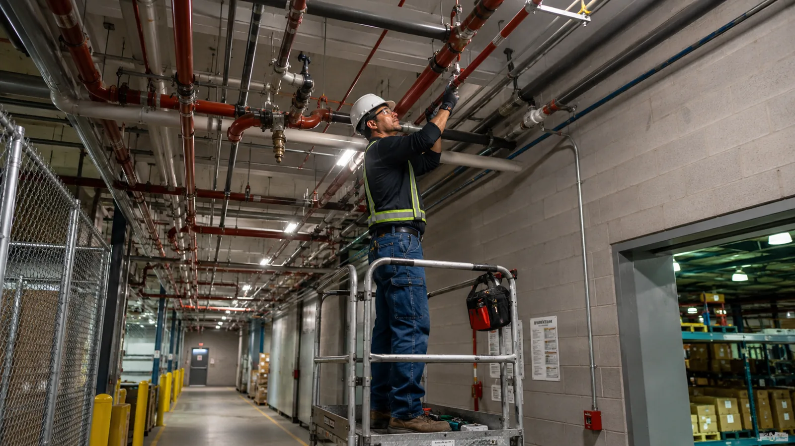

임대 광고만으로 해결되지 않는 공실
2026년 2분기 기준 오피스와 상가의 흐름은 같지 않습니다. 오피스 임대료는 오르는데 상가는 내리고, 특히 일반상가의 공실은 광고를 더 낸다고 채워지는 수준이 아닙니다. 입지·업종·시설·운영 방식을 다시 설계해야 하는 수요가 커지고 있습니다.
- 9.0%전국 오피스 공실률한국부동산원 2026년 2분기
- 13.4%전국 일반상가 공실률중대형 14.3% · 소규모 8.5%
- +0.42%오피스 임대가격지수전분기 대비
- −0.03%상가 통합 임대가격지수전분기 대비
출처: 한국부동산원 「2026년 2분기 상업용부동산 임대동향조사 결과」(2026.07.30). 수치는 발표 시점 기준입니다.
이런 건물에 맞습니다
| 고객 | 대표적인 문제 | 지유의 제안 |
|---|---|---|
| 중소형 상업용 건물주 | 장기 공실, 임대료를 낮춰도 안 나가는 층, 노후화 | 공실 진단 → 수익모델 → 공간 리뉴얼 → 임대 또는 운영 → 시설관리 |
| 법인 보유 유휴자산 | 사옥 일부, 비어 있는 층, 창고가 비용만 발생 | 가장 유효한 활용안 제시, 임대형과 운영형 비교, 단계별 공사비 |
| 매입을 검토하는 투자자 | 싸게 샀지만 리뉴얼·운영 계획이 없음 | 매입 전 진단 + 밸류업 예산 + 매각 시나리오 |
| 숙박·리테일 운영을 멈춘 자산 | 기존 업종의 경쟁력 상실 | 용도·브랜드·객실 또는 매장 구조 재설계 |
| 지유코퍼레이션 관리 건물주 | 공실, 설비 교체, 임차인 이탈 | 관리 데이터를 바탕으로 한 선제적 밸류업 제안 |
진단에서 운영까지, 여섯 단계
업종을 정한 뒤 공간을 만드는 것이 아니라, 고객·임대료·운영 방식·공사비를 동시에 놓고 가장 남는 안을 찾습니다. 각 단계는 따로 계약할 수 있습니다.
진단 — 상권 · 공실 · 시설
주변 상권과 유동, 경쟁 공간, 층별 공실 기간과 임대료, 설비 상태와 법정검사 이력을 현장에서 확인합니다. 지유코퍼레이션의 물리적 실사(D.D)와 열화상·설비 진단을 함께 씁니다.
사업성 — 수익 · 공사비 · 회수기간
임대형과 운영형 시나리오별로 예상 수익, 필요한 공사비, 회수기간을 비교합니다. 여기서 실행할 만하지 않으면 그렇게 말씀드립니다.
기획 — 업종 · 콘텐츠 · 공간
어떤 업종과 콘텐츠를 넣을지, 공간을 어떻게 나누고 동선을 어떻게 잡을지, 임대 구조와 운영 방식을 정합니다.
PM — 설계 · 견적 · 공정
디자인 방향을 정하고 견적을 비교해 등록 시공사를 선정합니다. 공정·품질·예산을 건물주 편에서 관리합니다.
오픈 — 임대 · 시스템 · 운영 매뉴얼
임대차를 붙이거나, 운영형이면 예약·결제·출입 시스템과 집기, 운영 매뉴얼을 세팅합니다.
운영 — 시설관리 · 데이터 · 개선
시설관리로 이어서 맡고, 개발 전후의 공실·임대료·운영비·하자 데이터를 기록해 다음 개선 제안의 근거로 씁니다.

왜 시설부터 보는가
공간을 예쁘게 만든 뒤에 배관이나 전기 용량 문제가 드러나면 공사비가 두 번 들어갑니다. 진단 단계에서 물리적·설비 리스크를 먼저 걸러야 “예쁜데 운영이 안 되는 공간”을 만들지 않습니다.
진단 결과는 다섯 가지 지표로 드립니다
건물의 상태와 공실 위험, 수익화 가능성, 에너지 효율, 밸류업 잠재력을 같은 기준으로 정리합니다. 어디에 돈을 써야 공실과 비용이 줄어드는지, 공사 우선순위가 무엇인지를 한 장으로 보여드리는 것이 목적입니다.
- 건물 상태
- 건축·전기·설비·소방 상태, 노후도, 수선 이력, 법정검사와 교체 주기
- 공실 위험
- 공실 면적과 기간, 임대료와 관리비 수준, 상권과 임차 수요, 유사 건물 임대료
- 공간 수익화
- 공간 분할, 적합 업종, 대관·운영형 전환 가능성, 무인화 여지
- 에너지 효율
- 전기·가스·수도 사용 패턴, 설비 효율, 운영비 개선 여지
- 밸류업 잠재력
- 공사비 대비 수익과 자산가치 개선 가능성, 실행 우선순위
모든 수치는 가정 · 견적 · 실제를 구분해 적고, 개발 전후를 비교할 수 있도록 기준일을 남깁니다. 프로젝트가 쌓일수록 진단 기준과 가중치를 다듬어 갑니다.
| 누가 | 어떤 질문에 | 무엇을 받는가 |
|---|---|---|
| 건물주 | 어디에 돈을 써야 공실과 비용이 줄어드는가 | 공사 우선순위와 밸류업 로드맵 |
| 매수자 · 투자자 | 이 건물을 사도 되는가, 얼마를 더 써야 하는가 | 매입 전 리스크·공사·운영 진단 |
| 중개 · 자산운용 파트너 | 매각 전에 어떤 개선이 필요한가 | 매각 전 밸류업 계획 |
지유공간개발이 다른 점
관리 데이터에서 시작합니다
시설관리와 자산관리에서 쌓인 점검 기록, 관리비, 임대차 이력이 진단의 출발점입니다. 건물의 물리적·설비 리스크를 먼저 확인해 공사비가 두 번 드는 일을 막습니다.
업종보다 수익 구조를 먼저 봅니다
고객·임대료·운영 방식·공사비를 동시에 놓고 최적안을 찾습니다. 유행하는 업종 하나를 밀지 않습니다.
준공이 아니라 운영이 끝입니다
오픈·운영·시설관리까지 연결해 실제 성과를 확인합니다. 결과가 나오지 않으면 개선안을 다시 드립니다.
자산가치로 결과를 확인합니다
개발 전후의 임대율, 임대·운영수익, 관리비, 순영업수익(NOI)을 기록해 자산가치가 실제로 올랐는지 보여드립니다. 그 데이터가 다음 프로젝트의 정확도를 높입니다.